The ride was booked. The passenger just wasn't there.
Reserved airport rides are Grab's premium promise. 15% never completed — more than half of those because the traveller didn't show. The booking was tied to a clock; the traveller was tied to a flight.
Nobody forgot their ride.
Cold calls with riders who missed pickups. Delays, immigration, bookings they couldn't change. Uber and Didi both start with the flight and build a waiting window around landing.
I reached late because my flight was delayed.
Rider
I didn't expect immigration to take so long.
Rider
I couldn't modify my ride in time.
Rider
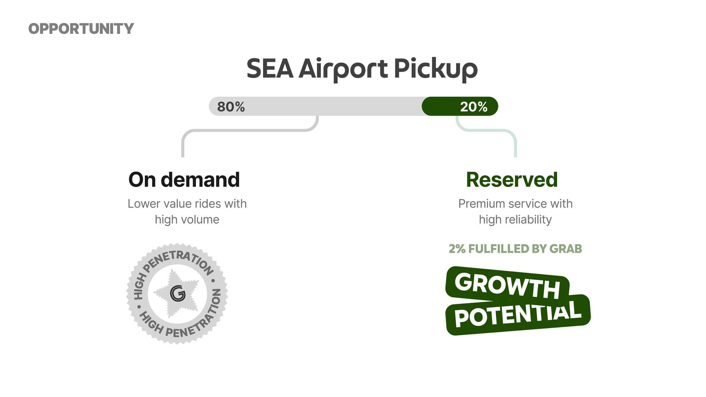
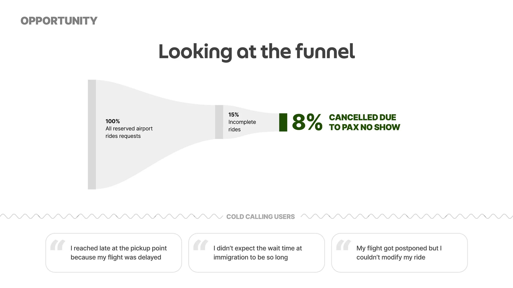
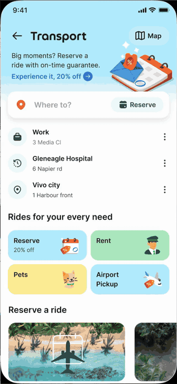
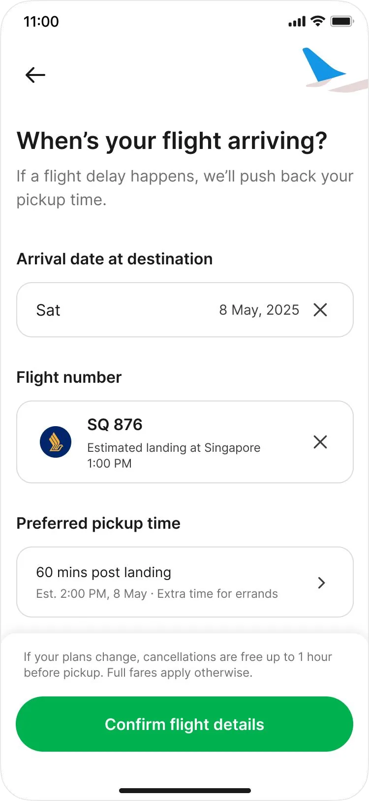
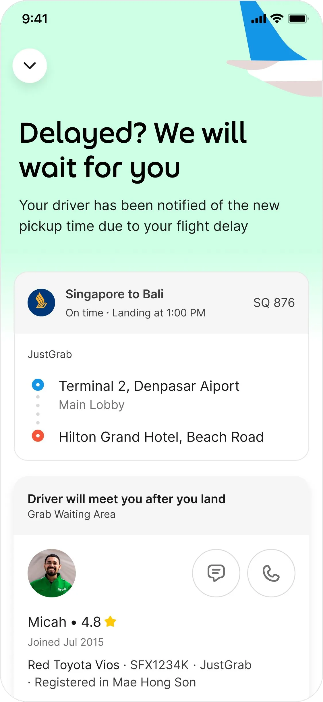
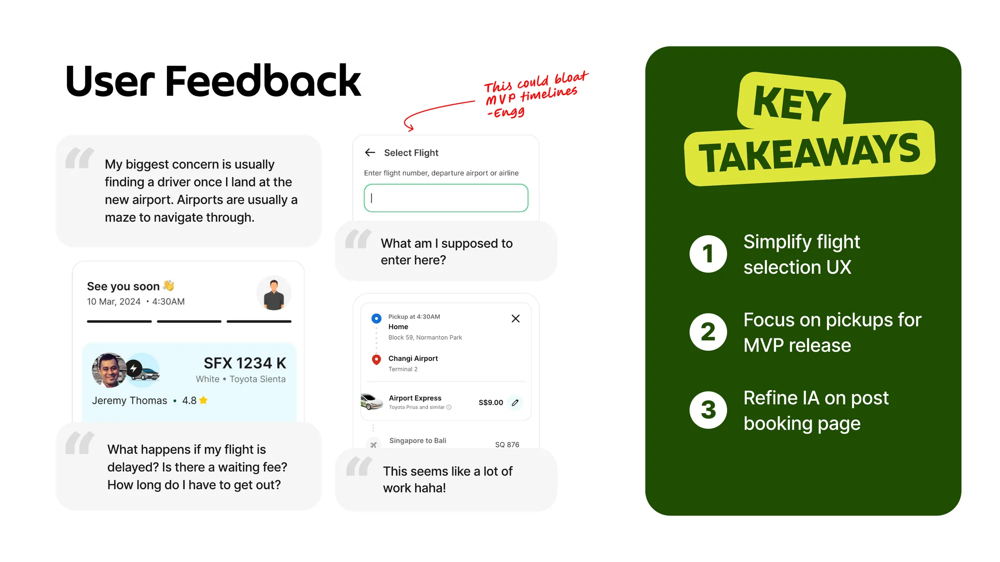
Three calls that shaped the MVP.
Cut the itinerary planner. Keep Grab's familiar booking steps. Let the traveller say when they're ready.
How should a traveller tell us their flight?
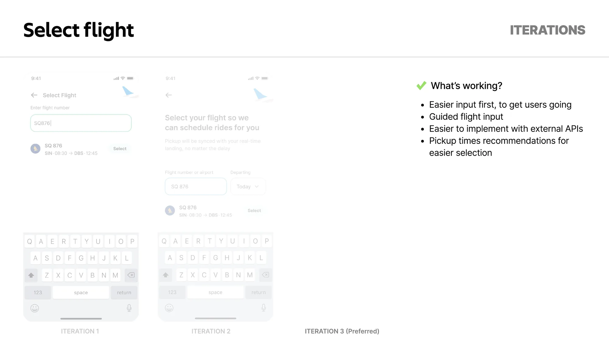
Ask for the flight number
Clear task, disconnected from pickup time.
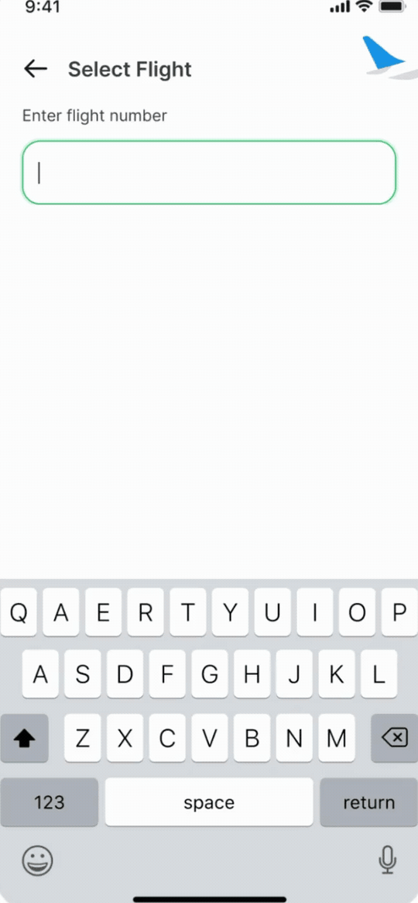
Lead with the benefit
Adoption up; bottom sheets broke the flow.
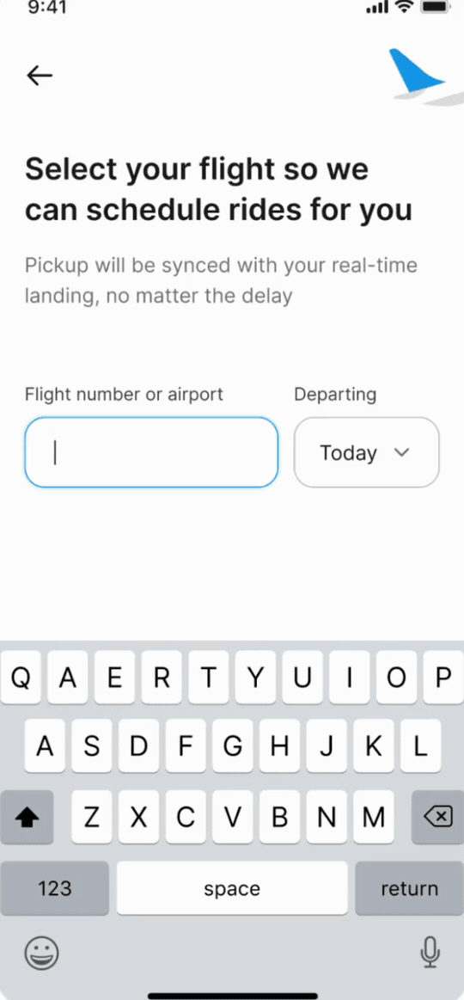
Easy input, then guided pickup time
Fastest path; fits the external flight API.
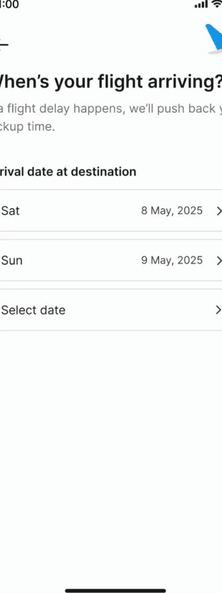
Own flow, or change only what's new?
Bespoke airport booking
Forces people to relearn drop-off and car pick.
Change only what's new
Flight is new; address and vehicle stay familiar.
Who decides when the traveller is ready?
Automatic proximity trigger
Immigration looks “close”. False triggers send drivers early.
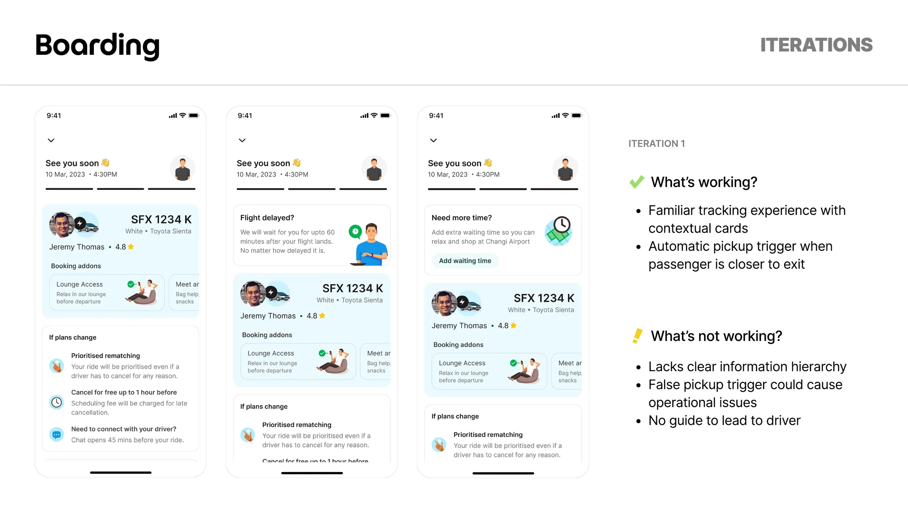
Flight sync + pickup guide
Traveller taps “I'm ready” and is walked to a door.
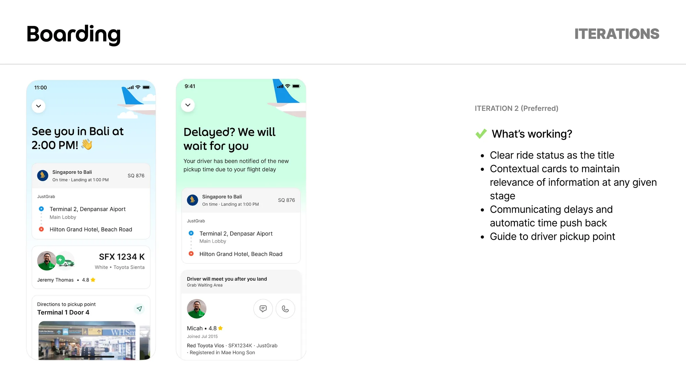
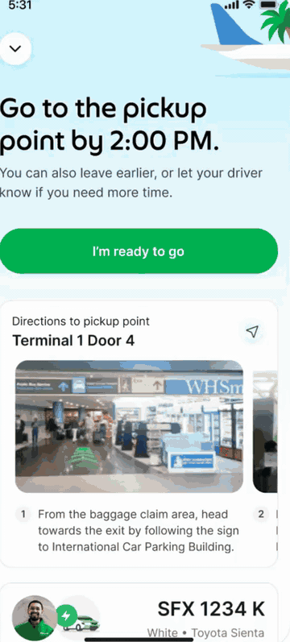
Premium, still recognisably Grab.
Sky-blue secondary next to Grab green. Status type that reassures. A reusable arrival-date component.
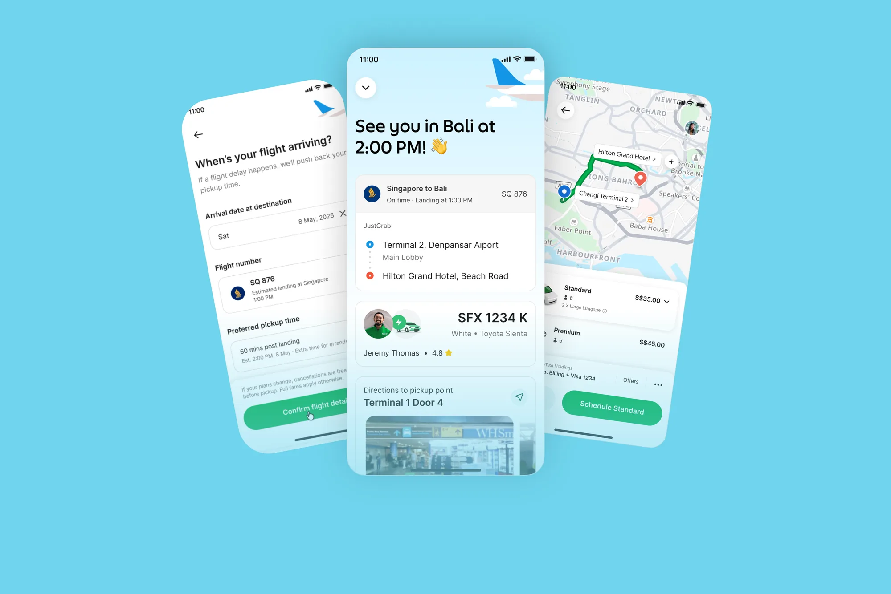
More rides booked. Fewer travellers missing them.
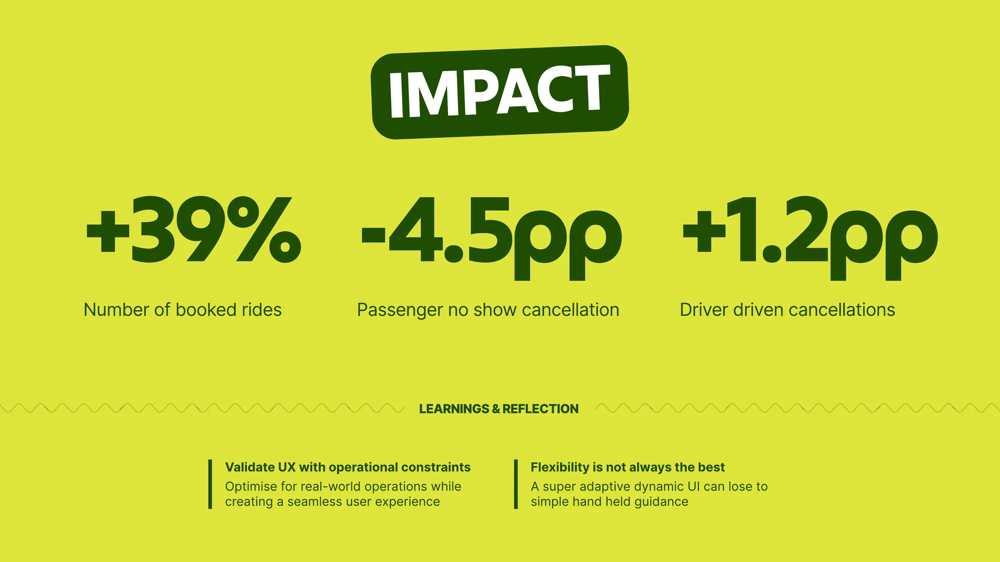
- Booked rides
- +39% More travellers booked ahead.
- Passenger no-shows
- −4.5pp Pickups moved with late flights.
- Driver cancellations
- +1.2pp Uncertainty shifted to the kerb.
Design the driver's wait as carefully as the passenger's. Waiting rules belong in v1, not the follow-up.